東京大学 2008年 理科 第1問
問題
座標平面上の点(x,y)を(3x+y,-2x)へ移す移動fを考え、点Pが移る行き先をf(P)と表す。fを用いて直線 を以下のように定める。
を以下のように定める。
は直線3x+2y=1である。
点Pが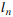上を動くとき、f(P)が描く直線を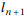とする(n=0,1,2,...)。
以下を1次式を用いて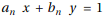と表す。
(1) 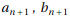を を用いて表わせ。
を用いて表わせ。
(2) 不等式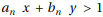が定める領域を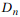とする。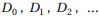すべてに含まれるような点の範囲を図示せよ。
解答
(1)
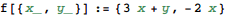
をfによって移した直線の式は以下。
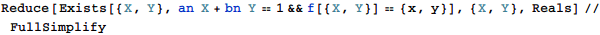
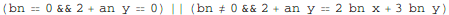
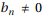のときは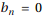のときに含まれ、求める関係式は
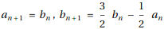
(2)
の一般項を求める。
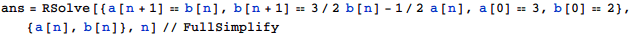
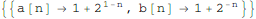
すべての非負整数nに対して領域に含まれる点(x,y)を求めるには、Reduceを用いればよいが、 Mathematia 8では誤った結果が返ってくる。
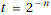
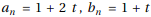
WolframAlphaを用いると正しい結果が返るので、これを利用する。
https://www.wolframalpha.com/input/?i=Reduce%5BForAll%5Bn%2C+n+%3E%3D+0%2C+%281+%2B+2%5E%281+-+n%29%29+x+%2B+%281+%2B+2%5E-n%29+y+%3E+1%5D%2C+%7Bx%2C++++y%7D%2C+Reals%5D&lang=ja
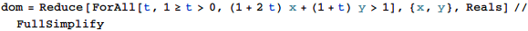
従って求める領域は下図(太実線部は含み、細実線部および点(-1,2)は含まない)。
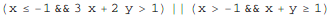
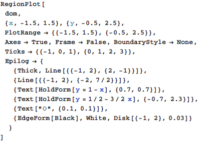